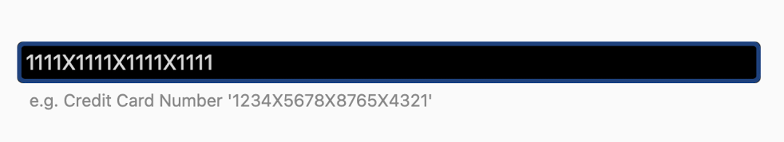

MaskedBehavior
The MaskedBehavior is a Behavior that allows the user to define an input mask for data entry. Adding this behavior to an InputView (e.g. an Entry) control will force the user to only input values matching a given mask. Examples of its usage include input of a credit card number or a phone number.
Important
The .NET MAUI Community Toolkit Behaviors do not set the BindingContext of a behavior, because behaviors can be shared and applied to multiple controls through styles. For more information refer to .NET MAUI Behaviors
Syntax
The following examples show how to add the MaskedBehavior to an Entry to aid a user when entering a 16 digit credit card number.
XAML
Including the XAML namespace
In order to use the toolkit in XAML the following xmlns needs to be added into your page or view:
xmlns:toolkit="http://schemas.microsoft.com/dotnet/2022/maui/toolkit"
Therefore the following:
<ContentPage
x:Class="CommunityToolkit.Maui.Sample.Pages.MyPage"
xmlns="http://schemas.microsoft.com/dotnet/2021/maui"
xmlns:x="http://schemas.microsoft.com/winfx/2009/xaml">
</ContentPage>
Would be modified to include the xmlns as follows:
<ContentPage
x:Class="CommunityToolkit.Maui.Sample.Pages.MyPage"
xmlns="http://schemas.microsoft.com/dotnet/2021/maui"
xmlns:x="http://schemas.microsoft.com/winfx/2009/xaml"
xmlns:toolkit="http://schemas.microsoft.com/dotnet/2022/maui/toolkit">
</ContentPage>
Using the MaskedBehavior
The MaskedBehavior can be used as follows in XAML:
<ContentPage xmlns="http://schemas.microsoft.com/dotnet/2021/maui"
xmlns:x="http://schemas.microsoft.com/winfx/2009/xaml"
xmlns:toolkit="http://schemas.microsoft.com/dotnet/2022/maui/toolkit"
x:Class="CommunityToolkit.Maui.Sample.Pages.Behaviors.MaskedBehaviorPage">
<Entry Keyboard="Numeric">
<Entry.Behaviors>
<toolkit:MaskedBehavior Mask="XXXX XXXX XXXX XXXX" />
</Entry.Behaviors>
</Entry>
</ContentPage>
C#
The MaskedBehavior can be used as follows in C#:
class MaskedBehaviorPage : ContentPage
{
public MaskedBehaviorPage()
{
var entry = new Entry
{
Keyboard = Keyboard.Numeric
};
var behavior = new MaskedBehavior
{
Mask = "XXXX XXXX XXXX XXXX"
};
entry.Behaviors.Add(behavior);
Content = entry;
}
}
C# Markup
Our CommunityToolkit.Maui.Markup package provides a much more concise way to use this Behavior in C#.
using CommunityToolkit.Maui.Markup;
class MaskedBehaviorPage : ContentPage
{
public MaskedBehaviorPage()
{
Content = new Entry
{
Keyboard = Keyboard.Numeric
}.Behaviors(new MaskedBehavior
{
Mask = "XXXX XXXX XXXX XXXX"
});
}
}
The following screenshot shows the resulting MaskedBehavior on Android:
Custom prompt character
It is possible to override the character in the Mask property that will be visible to the user. This can be changed by setting the UnmaskedCharacter property which defaults to 'X'. So for example if an X was required to be displayed in between each group of 4 digits in our 16 digit credit card entry the following could be used:
<Entry Keyboard="Numeric">
<Entry.Behaviors>
<toolkit:MaskedBehavior Mask="0000X0000X0000X0000" UnmaskedCharacter="0" />
</Entry.Behaviors>
</Entry>

Properties
| Property | Type | Description |
|---|---|---|
Mask |
string |
The mask that the input value needs to match. |
UnmaskedCharacter |
char |
Defines which character in the Mask property that will be visible and entered by a user. |
Examples
You can find an example of this behavior in action in the .NET MAUI Community Toolkit Sample Application.
API
You can find the source code for MaskedBehavior over on the .NET MAUI Community Toolkit GitHub repository.